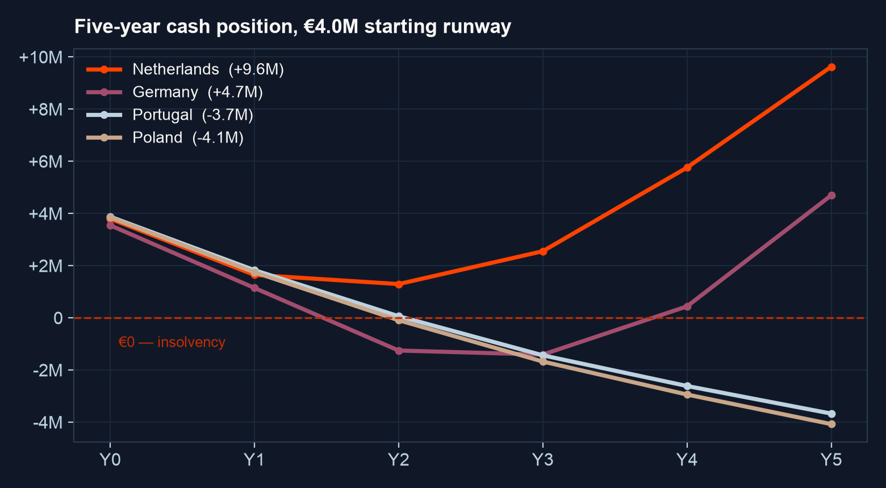
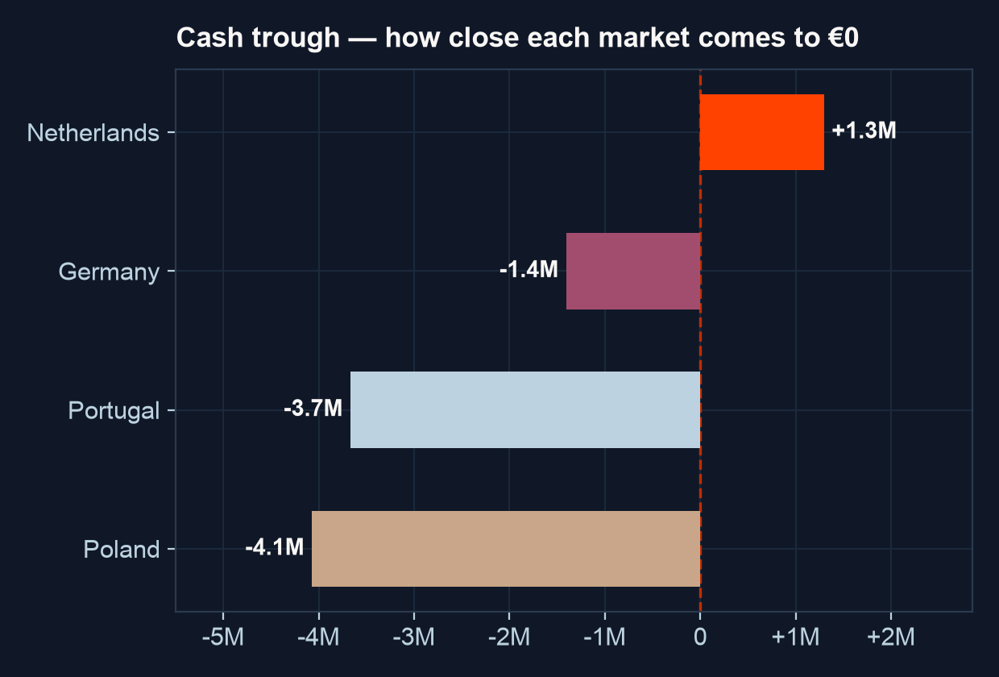
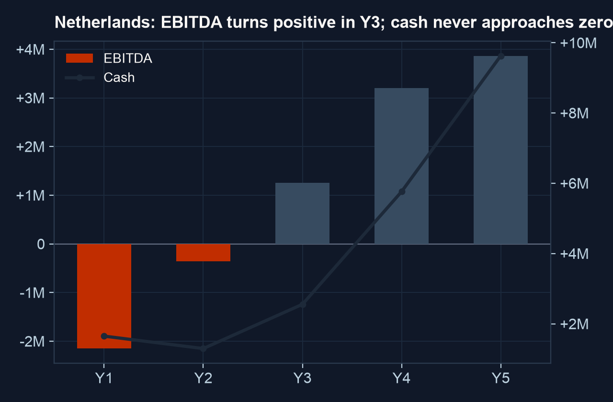

Right market later, unaffordable market now. File the German application early (the clock is procedural) and enter once NL cash flow or new capital funds the wait.

What must be true: reimbursement ≈ month 12 · ramp ~13% of addressable by the second reimbursed year · price holds near €215.
| cash trough ramp ↓ delay → | 12 mo | 18 mo | 24 mo |
|---|---|---|---|
| ramp ×50% | -0.0M | -2.1M | -2.1M |
| ramp ×75% | +0.8M | -1.3M | -1.3M |
| ramp ×100% | +1.3M | -0.8M | -0.8M |
| ramp ×125% | +1.6M | -0.5M | -0.5M |
The same grid lives as formulas in the Excel: change an assumption, everything recalculates.
€200k entry · file reimbursement immediately · first revenue ~month 13
the 24-month pathway is procedural: file while NL scales, spend €0
€120k entry, home turf, contribution-positive add-on
enter once the wait is funded · Poland stays parked (€115 price)
74 values extracted deterministically · 0 AI calls · eval 28/28 · 0.9s end-to-end. Markets 5–14 are a config entry away.